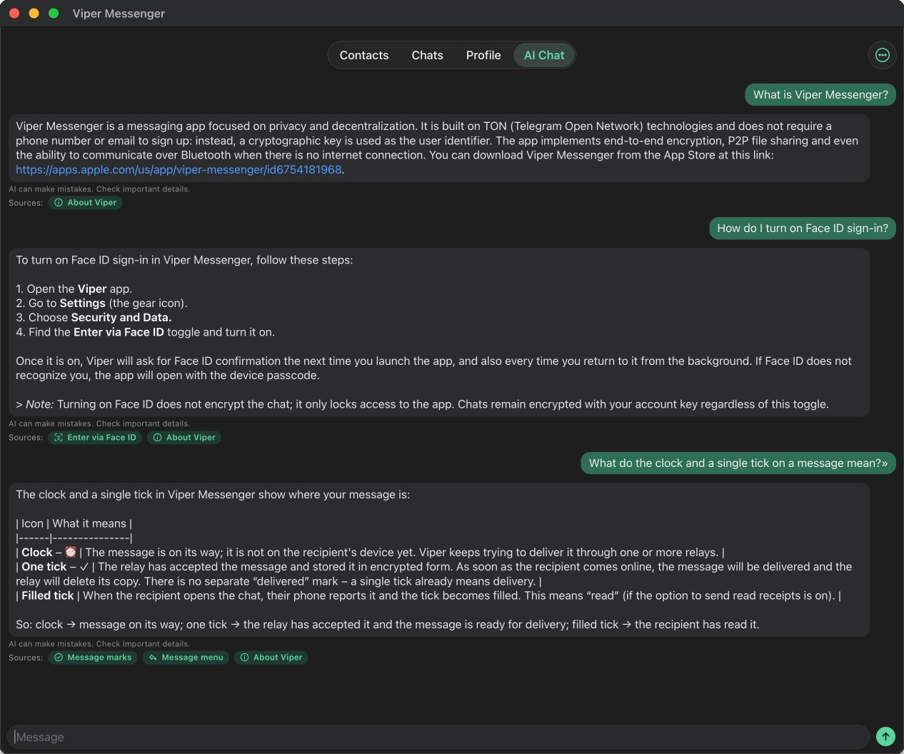
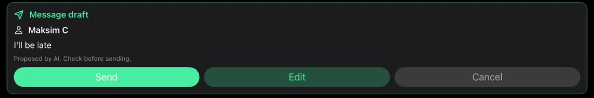
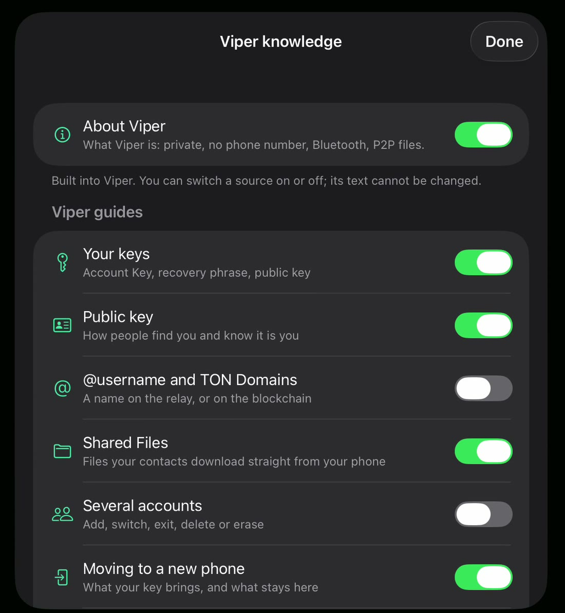

AI
From a chat to the AI and back, on this device
AI on this device
Open AI Chat and tap Download once. Then the model runs on this device, offline: what you ask stays with you. Small models run on iPhone, iPad and Mac; the large GPT-OSS 20B runs on a Mac only.



From a chat to the AI
In a chat, hold a message, tap Select and pick a few. Tap ✨: AI Chat opens with them. Tap Summarize, or write what to do.
From the AI to a friend
Hold an AI answer, tap Forward to chat… and pick the chat. Your friend sees it marked Forwarded from Viper AI.
A message from the AI
Ask GPT-OSS 20B to write to a contact: it shows a draft with the recipient. Nothing is sent until you tap Send. Edit changes it, Cancel drops it. The ✦ Viper AI block is the AI's comment: Without comment removes it.
Contacts for AI
AI Chat menu → Contacts for AI…: pick up to 50 contacts the AI may write to by @username. Only names go to the model, never keys or messages. Only GPT-OSS 20B on a Mac does this.
GPT-OSS 20B on Mac
A large model, for a Mac only (the iPhone app on Apple silicon). About 12 GB, downloaded once; then it runs offline. Only GPT-OSS 20B answers from Knowledge and writes drafts to contacts, events and notes; small models just chat.
Knowledge
GPT-OSS 20B answers about Viper from About Viper, the guides of this build and What's new in this build, and from My knowledge. Under an answer, Sources show what it used. AI Chat menu → Viper knowledge…: read, copy or share each source, and switch it on or off.
My knowledge
AI Chat menu → Knowledge… → Add: write your own text in Markdown, any length. Edit and Preview show how it reads. Share… sends it to a friend, who can add it to theirs.
From the guide in Viper 1.5.34: Profile → Settings → Help → Guides. All posts